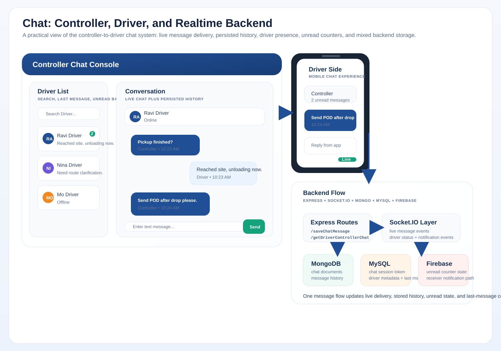

Visual Overview

Reference visual of the realtime chat flow, stored history, unread handling, and participant state.
Independent Project
Chat was a realtime controller-to-driver communication service built with Express and Socket.IO, combining live delivery, stored history, unread-state handling, and operational user metadata.

Reference visual of the realtime chat flow, stored history, unread handling, and participant state.
This is a strong backend communication story because it goes beyond simple socket messaging and shows how live delivery, history persistence, unread behavior, and operational presence worked together.
This page complements the other backend-heavy examples by showing realtime delivery and stateful communication.